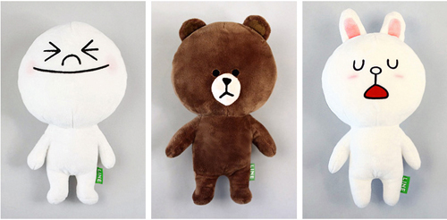
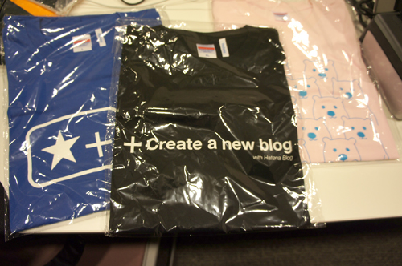
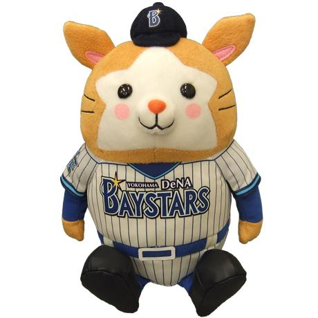
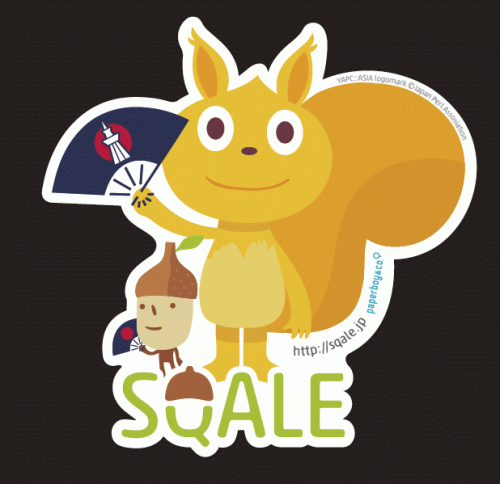
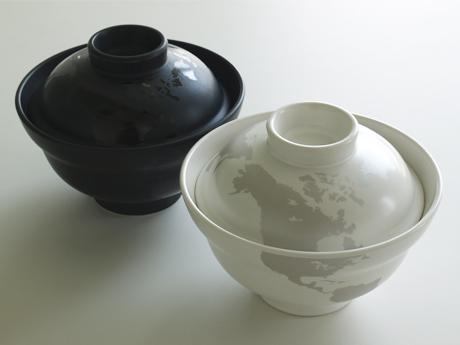
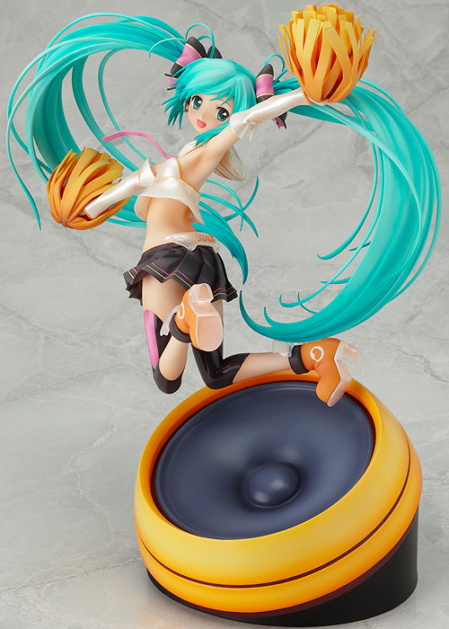

【締め切りました】YAPC::Asia 2012 感想ブログを書く、参加者アンケートに答えてスポンサープレゼントに応募してください！
【追記その３】
YAPC::Asiaについてのブログを書いてプレゼント応募申し込みは終了しました。
引き続きエントリを収集していきますのでブログまとめに掲載されていないエントリを
ご存知でしたら是非投稿してください。（ご本人でなくても結構です）
こちらから→http://bit.ly/TPvgBD
【追記その２】
立ち読み企画にご協力いただいた出版社各社さまより、追加プレゼントとして
技術書をご提供いただきました！ありがとうございます！
【追記】
こちらのプレゼント応募締切は10月7日（日）とさせていただきます。
その後もブログまとめの掲載、アンケート回答受付は行いますので
宜しくお願いいたします。
-----
櫛井です。
オープニングでも説明させていただきましたが、今年のYAPCは終了後にも
お楽しみがあります。
先ほど当ブログにてお知らせいたしましたが、感想ブログを収集しております。
YAPC::Asia 2012 ブログまとめ | YAPC::Asia Tokyo 2012
また、参加者アンケートも少し早いですが開始しております。
YAPC::Asia 2012 アンケートのお願い | Questionnaires | YAPC::Asia Tokyo 2012
この
・感想ブログを書く
・参加者アンケートに答える
をしていただくと、YAPC::Asia 2012 スポンサー各社さまよりご提供
いただいたプレゼントを抽選でお送りいたします。
（プレゼントの当選は発送を持ってかえさせていただきます）
ちなみに、感想ブログとアンケートはそれぞれでカウントしますので
両方でプレゼント応募された場合は純粋に当選確率が２倍となります。
沢山のご応募、お待ちしております！
景品をご紹介します。
まず、NHN Japan株式会社さまよりLINEぬいぐるみ３体をセットにして３名様

はてな株式会社さまより、はてなTシャツを３名様に。
サイズはS、M、Lでサイズの指定は出来ません。

ディー・エヌ・エー株式会社さまより、横浜DeNAベイスターズのマスコットキャラの
ぬいるぐみ「お座りDB.スターマン（L）」を１名様

シックス・アパート株式会社さまより
・トフぬいぐるみ
・シックス・アパート トートバッグ
・シックス・アパートロゴ刺繍入りTシャツ
をセットで１名様

KDDIウェブコミュニケーションズ株式会社様より「CloudCore」オリジナルの卓上時計と
「CloudCore VPS」 1年間無償利用権 をセットで３名様
株式会社paperboy&co.さまより、Sqale Tシャツを３名様

面白法人カヤック様より、ワール丼をペアで１名様

ピクシブ株式会社さまより、 初音ミク Cheerful Ver. フィギュア を１名様
（レアもののようで、いま買うと２万円くらいするようです。すごい！）

こちらもピクシブ株式会社さまより、
・Quarterly pixiv vol.08(pixiv季刊誌)
・pixiv年鑑(オフィシャルブック)
・pixivガールズコレクション(オフィシャルブック)
・pixiv Make!(イラストハウツー本)
のpixiv書籍セット

【追記】
立ち読み企画にご協力いただいた出版社各社さまより、技術書を
ご提供いただきました！（プレゼントとなる本は展示されていたものとなります）
技術評論社さまより、「JavaScript テクニックバイブル」を１名様

技術評論社さまより、「業務に役立つPerl」を１名様

技術評論社さまより、「ソフトウェアデザイン 10月号」を１名様
![Software Design (ソフトウェア デザイン) 2012年 10月号 [雑誌]](http://ecx.images-amazon.com/images/I/51xrZlZ55OL.jpg)
Software Design (ソフトウェア デザイン) 2012年 10月号 [雑誌]
技術評論社さまより、「WEB+DB PRESS 10月号」を２名様

オライリーさまより、「JavaScript 第6版」を１名様

オライリーさまより、「初めてのPerl 第6版」を１名様

ご応募お待ちしております！